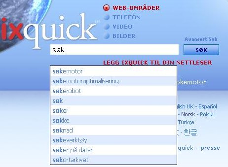

Forklaring til søkeforslag | ||
|
Q: Hvordan aktiverer jeg søkeforslag? A: Du kan aktivere søkeforslag ved å velge dette på "Innstillinger"-siden. Siden "Innstillinger" kan velges fra alle Ixquick-sider. |  | |
|
Q: Hvordan fungerer søkeforslag i Ixquick? A: Etter hvert som du taster inn en spørring, sammenligner vi ditt søkeord mot en stor samling av generelle forslag, og de mest populære samsvarende begrepene vises i synkende rekkefølge mht. popularitet. | ||
|
Q: Hvordan skiller Ixquicks søkeforslag seg fra andre søkemotorer? A: De fleste andre søkemotorer baserer seg på faktiske brukersøk når de presenterer søkeforslag. Så bare ved å skrive inn søket, får du vite hva andre søker mest etter. Ixquick, som er en pioner innenfor personvern for brukerne, gjør det ikke på denne måten. Vi viser generelt relevante forslag for alle spørsmål du skriver inn. | ||
|
Q: Så hvor kommer Ixquicks forslag fra? A: Våre forslag kommer fra en rekke kilder som spenner fra ordbokoppføringer til allment tilgjengelige sider av interesse som er fritt tilgjengelig på Internett, for eksempel Wikipedia-sider. | ||
|
Q: Finnes forslagene på alle språk? A: Ja, forslagene er tilgjengelige på alle språk Ixquick tilbyr. | ||
|
Q: Viser Ixquick betalte forslag også? A: Nei. Forslagene er kun basert på den relative populariteten. Ingen reklame er involvert. | ||
|
Q: Jeg får se engelske forslag for noen søkeord samtidig som jeg bruker Ixquick på for eksempel tysk. Hvorfor skjer dette? A: Engelsk er helt klart det primære språket på weben. Mens vår algoritme returnerer forslag som er spesifikke for ditt språk først, viser vi i tilfelle det ikke er nok forslag som passer til ditt søkespråk i henhold til dine preferanser, også noen forslag på engelsk. Selvfølgelig vises forslag på ditt språk først i oversikten. | ||
|
Q: Kan jeg forvente å se personlige forslag i framtiden? A: Som du er vet, lagrer vi ingen personlige opplysninger om våre brukere. Derfor kan vi ikke tilby personlig forslag, det ville gå ut over ditt privatliv. | ||
|
Q: Jeg ønsker ikke at mitt barn skal få forslag som kun egner seg for voksne. Kan jeg sikre det? A: Selvfølgelig. Forslagene er synkronisert med familiefilterinnstillingene for web/bilde. Hvis filteret er satt til å filtrere bort uegnede resultater når du søker, vil vår algoritme gjøre sitt ytterste for å ikke vise slike forslag. | ||
|
Q: Jeg har aktivert mine søkeforslag, men jeg ser ikke noen forslag. Hva kan årsaken være? A: Kontroller at nettleseren din har aktivert Javascript. Det er avgjørende for at søkeforslag skal fungere. | ||
|
Q: Jeg bruker ikke "informasjonskapsler", eller sletter dem regelmessig. Kan jeg fortsatt bruke søkeforslagalternativet? A: Ja, det kan du. Som en personvernorientert søkemotor har vi laget et "Generer URL"-alternativ som lar deg lagre dine preferanser i en URL i stedet for å måtte bruke en informaskonskapsel. "Generer URL" finner du nederst på siden "Innstillinger". |
||